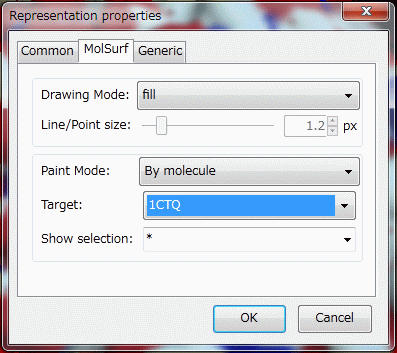
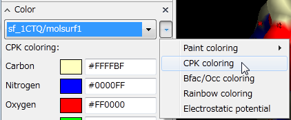
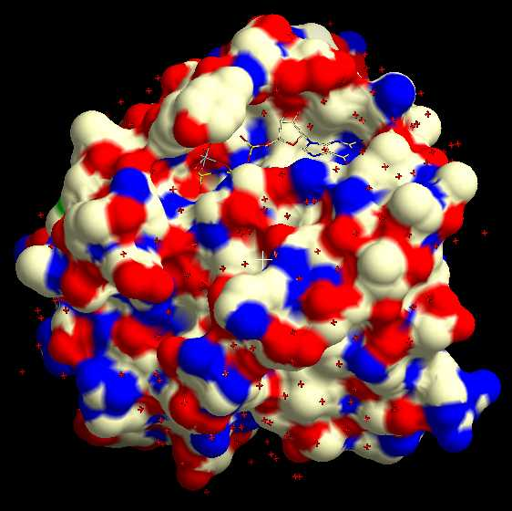

MolSurfaceDisp
分子表面の表示設定など¶
ここでは，分子表面(MolSurfObj)とそのレンダラー(molsurfレンダラー)の表示設定について説明します．
※例としてGDPNP結合型P21Rasの構造(1CTQ) を使用して説明しています．
Sample scene fileが以下からダウンロードできます．
- 1CTQ_surf_1.qsc： 分子表面作成後の状態
- 1CTQ_surf_2.qsc： GDPNPのballstick表示作成後の状態
- 1CTQ_surf_3.qsc： 表面ドット表示作成後の状態
分子表面オブジェクト(MolSurfObj)とmolsurfレンダラー¶
分子表面オブジェクト(MolSurfObj)は，文字通り，「分子の表面に関する情報」を持っているオブジェクトです． 分子表面の生成や，他にmsmsで作成したsurf/vertファイルを読み込むことで作成できます．
一方で，molsurfレンダラーは，分子表面オブジェクト(MolSurfObj)専用のレンダラーであり， 分子表面オブジェクトを画面に表示する役割を持ちます．
ところで， この「分子表面オブジェクト」(MolSurfObj)は， それ自体は分子の情報を持っておらず， 単に表面の形状情報（ポリゴンの集まり）のみを持っています． そのため，それ自身では単一色のべた塗りしかできません．
molsurfレンダラーはMolSurfObjを画面に表示する役割を持っていますが， molsurfレンダラーに，表示しようとしているMolSurfObjはどの分子（ターゲット・オブジェクト） に対応したものかを指示してやることで， 分子に応じた着色が可能になります．
以下では，molsurfレンダラーのターゲット・オブジェクトと，それに関連した設定を説明します．
Mol surface generation toolで作成した場合¶
分子表面の生成にて説明したように， Mol surface generation toolで分子表面を作成した場合は， 作成元となった（i.e. Target moleculeで設定した）分子が， 自動的にターゲット・オブジェクトとして設定されます．
例)
ページ冒頭にあるsample scene fileをダウンロードして開きます．
（シーンの保存と読み込み参照）
（あるいは，1CTQ.pdbの分子(MolCoord)オブジェクトを読み込んだ後 分子表面の生成を行います．）
sf_1CTQという名前の分子表面オブジェクト(MolSurfObj)ができますが， それアタッチされたmolsurfレンダラーのプロパティー・ダイアログを開きます． （Sceneパレットで，molsurfレンダラーをダブルクリックすると表示されます． GUIのチュートリアルレンダラーのプロパティーを変更する参照）
MolSurfタブをクリックすると，下図のような画面が表示されます．

ここで，Paint Modeは後で説明する着色モードで，Targetがターゲット・オブジェクトになります．
このように，Paint ModeはBy moleculeに， さらに，その下にあるTargetは1CTQに， 自動的に設定されていることがわかります．
このように，Mol surface generation toolで分子表面を作成した場合は， ターゲットオブジェクトの設定を手動で行う必要はありません． （意図的にほかのオブジェクトに基づいて着色したい場合は，Targetを変更すればよい）
MSMSファイル(vert/face)を読み込んだ場合¶
MSMSによって生成されたvert/faceファイルを読み込んだ場合， vert/faceファイルはポリゴンの情報しか持っていないため， 手動でターゲット・オブジェクトを，参照する分子オブジェクトの名前に設定してやる必要があります． 前述のプロパティーダイアログのMolSurfタブにて， Paint ModeをBy moleculeにして， さらに，その下にあるTargetで，参照する分子オブジェクトの名前をリスト中から選んでください．
molsurfレンダラーの着色モード(Paint mode)¶
molsurfレンダラーには，主に以下の着色モード(Paint mode)があります．
- 分子による着色モード (By molecule)
- 静電ポテンシャルマップよる着色モード (By potential)
- べた塗モード (Solid)
Paint modeを設定するには， 分子表面オブジェクト(MolSurfObj)にアタッチされたmolsurfレンダラーのプロパティー・ダイアログを開き， 上述のようにMolSurfタブを選んで， Paint Mode項目のリストから相当するものを選択してください． （Sceneパレットで，molsurfレンダラーをダブルクリックすると表示されます． GUIのチュートリアルレンダラーのプロパティーを変更する参照）
以下では，個々のPaint modeについて説明します．
分子による着色モード¶
このモードでは，targetプロパティーに指定された分子オブジェクトが参照され， 指定分子に応じた着色がなされます．
Paint modeをBy moleculeに設定すると分子着色モードになりますが， 以下で説明するように， ColorパレットからCPK coloringやPaint coloringを選ぶと自動的に分子着色モードになります． ここで，targetプロパティーが適切な分子に設定されていれば， ballstickやribbon等の分子用レンダラーと同様の方法で着色設定を行うことができます．
※Mol surface generation toolで作成したmolsurfレンダラーの場合は初めから分子着色モードになっており， 上述のように適切なtargetが初めから設定されているため，すぐにColorパレットで色の変更にとりかかることができます．
CPK coloring¶
例えば，以下のようにmolsurfレンダラー(sf_1CTQ.pdb/molsurf1)を選んで， 右のドロップダウンリストからCPK coloringを選ぶと，下図のように分子表面が元素に応じた着色になります．(というか例ではすでに最初からそうなってますが．)
 ⇒ 
{kind=link}
Paint coloring¶
次に，以下のようにPaint coloring→defaultを選ぶと， 下図のように二次構造に応じた着色になります． Paint coloringはデフォルトでは二次構造に応じた着色になっていますが， 分子選択と色の組を指定することで，ほぼ任意の着色が可能です． チュートリアルのPaint Coloringを参照してください．
{kind=link}
{kind=link}
Bfac/Occ coloring¶
次に，以下のようにBfac/Occ coloringを選ぶと， 下図のように温度因子に応じた着色になります．Bfac/Occ coloringについては，着色(Coloring)についての後半を参照してください．
{kind=link}
{kind=link}
Rainbow coloring¶
さらに，以下のようにRainbow coloringを選ぶと， 下図のように残基番号に応じた虹色の着色になります．Rainbow coloringについては，着色(Coloring)についての後半を参照してください．
{kind=link}
{kind=link}
静電ポテンシャルモード¶
このモードでは，targetプロパティーに指定された静電ポテンシャルオブジェクトが参照され， 静電ポテンシャルマップの値に応じた着色がなされます．
Paint modeをBy potentialにすると静電ポテンシャルモードになりますが， Colorパレットで「Electrostatic potential」という項目を選んでも自動的にこのモードに設定されます．
詳しくは，静電ポテンシャルマップの計算と表示後半部分の説明を参照してください．
べた塗モード¶
Paint modeをsolidにするとべた塗モードになります． このモードでは，targetプロパティーは参照されず， 単にdefaultcolorプロパティーで指定した色単色で表面が塗られます．
defaultcolorプロパティーの初期値は#C0C0FF(うす紫色)に設定されていますが， 下図のようにGenericタブからこの値を変更することで任意の色にべた塗可能です．
{kind=link}
{kind=link}
※べた塗モードだけは，molsurfレンダラーのプロパティーダイアログで手動でプロパティーを設定しないと，指定することができません．
分子表面の一部分のみを表示させる¶
Paint modeがmoleculeの場合，分子表面の一部分のみを表示させることができます．
準備¶
例に用いている1CTQにおいて， GDPNP(A.167.*)をballstick表示にして，タンパク分子部分のみについてMolSurfObjを作成すると， 以下の図のようになります．

上図のシーンは冒頭の1CTQ_surf_2.qscでダウンロードできます．
また，以下の手順でも作成できます：
- 1CTQをダウンロードする．（メニュー「File」→「Get PDB ...」，1CTQと入力しOK, simpleレンダラーを表示させる．チュートリアル分子モデルファイルを読み込む後半参照）
- Mol surface generation tool（メニュー「Tool」→「Mol surface generation ...」）でproteinに対して分子表面を生成．分子表面の作成参照
- sf_1CTQ, molsurf1が作られる
- molsurf1レンダラーはデフォルトでCPK coloringになっているのでColorパネルから炭素の色を灰色に変える（GDPNPが見やすいように変えているだけなのでそのままでもOK）
- GDPNPのballstick表示を作成．Sceneパネルにて1CTQ(MolCoord)を選択し，「＋」ボタンをクリックして新規rendererを作成する．その際，Setup rendererダイアログにてRenderer typeはballstickに，selectionにはA.167.*(GDPNP)を指定する．
showselプロパティーの変更¶
例えば，GDPNP(A.167.*)の周りの分子表面のみ表示したかったとしましょう． まず，molsurfレンダラー(molsurf1)のプロパティーを表示させます． MolSurfタブをクリックするとプロパティー一覧が表示されます．
{kind=link}
{kind=link}
下のほうにShow selectionという項目があるので， そこに上図のように表示する部分の分子の選択を入力します． 例では既に (すべての原子について表示)が入っていますが， A.167. (GDPNPに対応する)の周囲だけ表示したいので， A.167.* around 5(GDPNPから5Å以内にある原子)と書き換え， OKボタンを押します．
すると，右図のようにGDPNPの周りの分子表面のみが表示されます．
※A.167.* と入力するとGDPNPに最も近い表面のみ表示されますが，これだと表示が断片化されたようになって見栄えが悪くなります．aroundの後ろの数値は見栄えが良くなるように適宜調節します．
同様に，例えばshowselにA.60:69.*という選択文を指定すると，残基番号A60-A69に対応する部分の分子表面のみが表示されるようになります(下図)．
{kind=link}
ドット表示・ワイヤフレーム表示¶
以上のような表示以外に，分子表面を点（ドット）や線（ワイヤフレーム）で表示させることも可能です．
準備¶
前節の例(1CTQ)の分子表面とballstickに加え，さらに， タンパク質部分のribbon表示を追加しておきます．
点表示に変更後のシーンは冒頭の1CTQ_surf_3.qscでダウンロードできます．
Drawing Modeの変更¶
下図のように，defaultではDrawing modeがfillになっていますが，これをline (wireframe表示)あるいはpoint (ドット表示)に変更するだけです．
{kind=link}
{kind=link}
lineに変更すると右図のようになります．
線や点のサイズ¶
lineやpointにすると，Line/Point sizeという項目が変更可能になりますが， この項目ではドットや線の太さをピクセル単位で指定します（Åでないことに注意）． ドット表示の場合は大きくした方が見やすいでしょう． （ただ，単位がピクセルなので画面のズーム状態によって表示の感じが変わってしまうことに注意してください）
ワイヤフレーム表示でのメッシュの細かさ，ドット表示での点の密度は， 分子表面オブジェクト生成時のDensity(/Å)で設定した値によって決まってきます． 点や線が粗あるいは密すぎる場合は分子表面オブジェクト生成からやり直す必要が有ります． 上図の例は，Density値はdefaultの1で作成したものです．
POV-Ray rendering時のmaterial設定¶
POV-Rayでrenderingすると，点は全て小さな球として描画されます． そのため，defaultの質感(material)設定ではViewでの表示と違った感じになってしまいます． （球がプラスチック風の質感で表示されるため）
下図のように，materialをshadowに設定することで画面表示と同じ感じにできます．
Materialの設定に関しては，cuemol2/Materialを参照してください．
{kind=link}